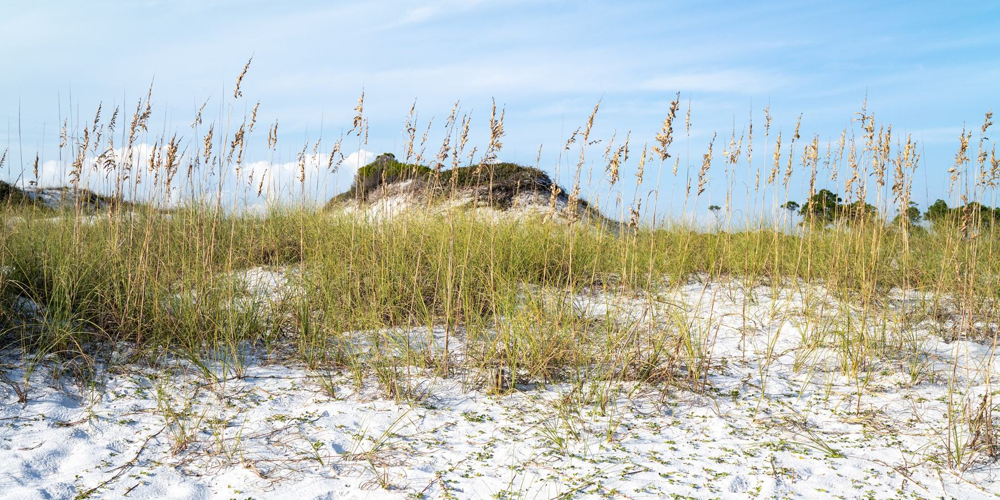

Where the chain begins.
Fuller Lake
Lake 1 of 15, west to east · Topsail area
Topsail Hill Preserve State Park. Photo by Alexander Hatley, CC BY 2.0, via Wikimedia Commons.
{kind=link}
About
Fuller Lake is the westernmost named coastal dune lake in Walton County, about 51 acres, in the Topsail area. The chain of lakes that runs east from here toward Lake Powell starts at this basin.
It does not open its own channel to the Gulf. Fuller is hydrologically connected with Morris Lake, the next lake east, so water it exchanges with the coast moves through that neighbor rather than through a direct outfall of its own. The public view described for it is by reservation, from a dock and from Memorial Grove, rather than from a boat launch.
Public access
Visitors are pointed to a reserved view at a dock and at Memorial Grove, not to a typical launch. This page does not take reservations and does not list a ramp.
Treat the connection with Morris Lake as the hydrologic fact that matters: Fuller is the start of the chain, and its Gulf story runs through the lake beside it.
Access rules, park fees, and reservation systems change. This page is a summary for orientation, not a permit or a promise that a shore is open.